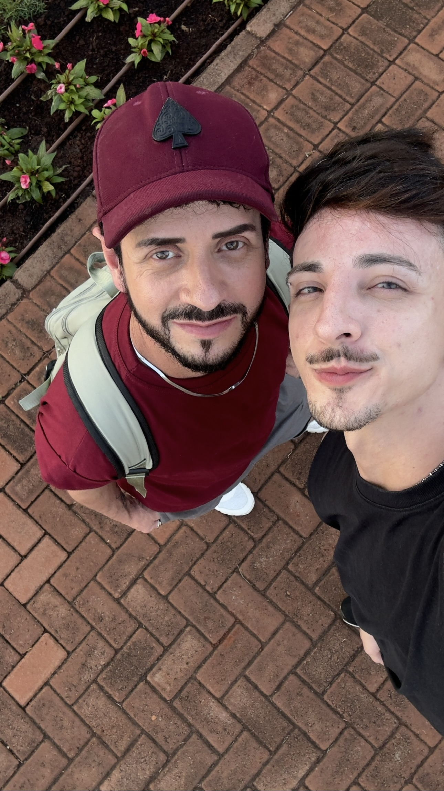
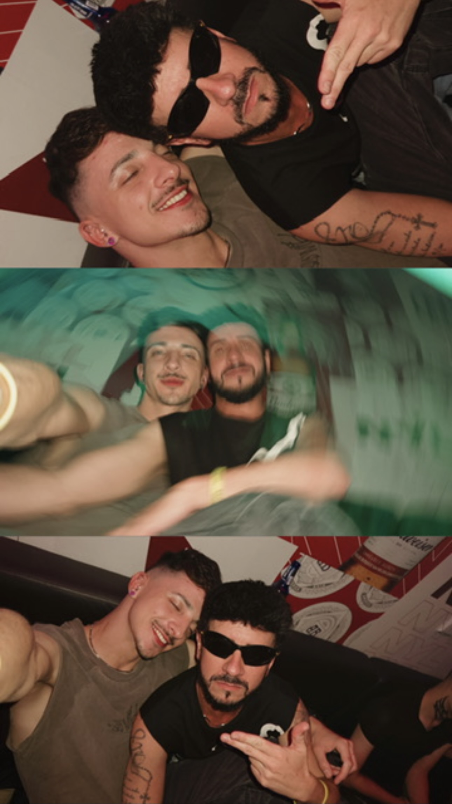
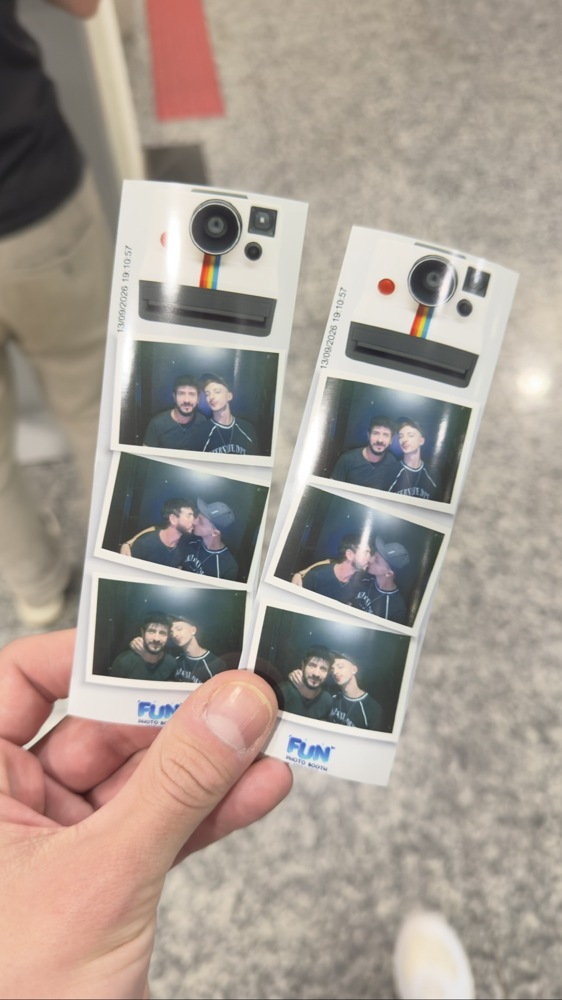
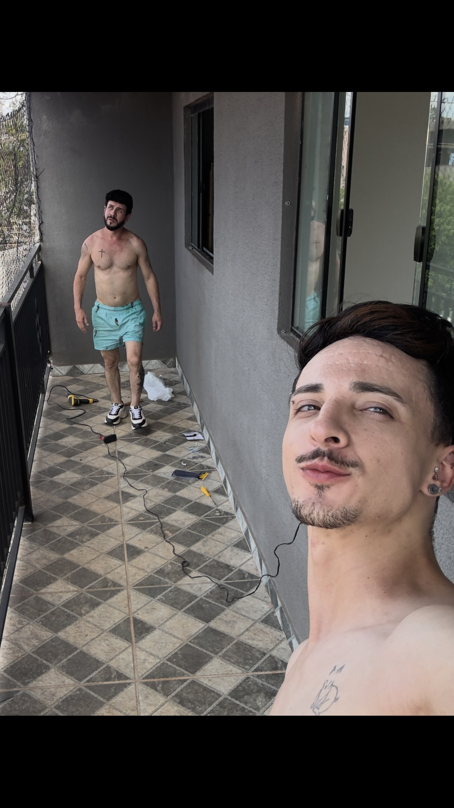
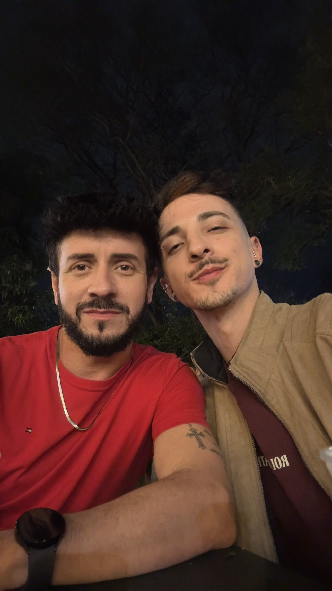
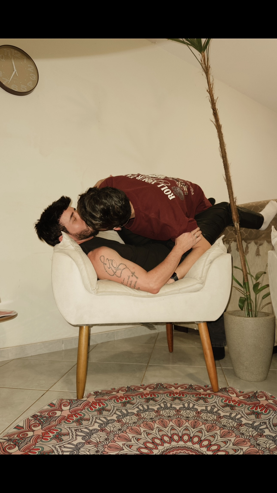
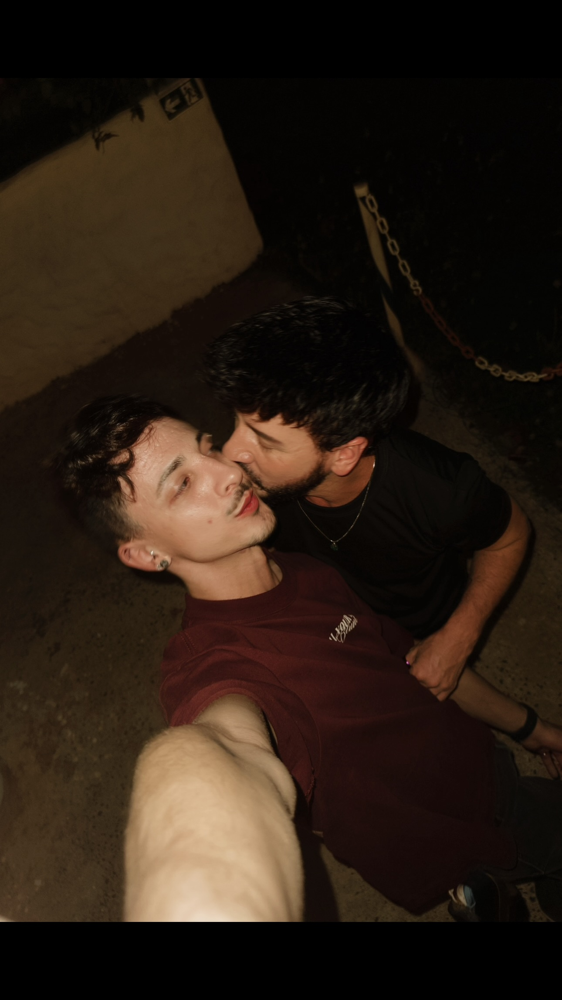
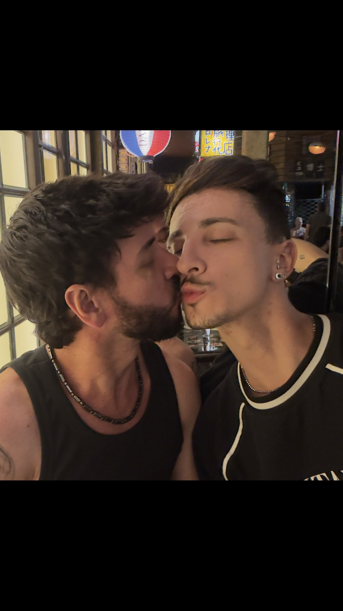

O encontro
O instante em que nossas histórias se encontraram pela primeira vez, em uma Virada Cultural.

uma história para guardar
Duas cidades. Um encontro. Uma escolha.
22 de agosto
Ele, de Londrina. Eu, de Maringá. Duas cidades que já existiam antes de nós, mas que naquele dia passaram a fazer parte da mesma história. O início por um sorriso e toque no braço dele...
Foi na Virada Cultural que nos encontramos. E existe uma pequena ironia bonita nisso: ele nem gostava muito de eventos assim... e mesmo assim veio.
E, para completar a primeira impressão, ainda teve a minha piada sobre a vaga prioritária de estacionamento quando ele chegou.
22.08 · MARINGÁduas cidades
A distância entre duas cidades pode ser medida em quilômetros. O que acontece entre duas pessoas, não.
desde 13 de setembro
e cada segundo continua fazendo parte da nossa história.
alguns capítulos







algumas memórias pedem movimento
Quando o vídeo entra em cena, a nossa música diminui para deixar a memória respirar.
Que o amor seja também— André & Leandro
um lugar onde os dois
possam pertencer.
mais um pedaço de nós
pequenas coisas
O instante em que nossas histórias se encontraram pela primeira vez, em uma Virada Cultural.
Conversas, olhares, risadas e aquelas pequenas coisas que passam a ter outro significado.
Porque pertencimento também mora nos dias comuns, quando simplesmente estar junto basta... ou dormir... rs.
Uma história bonita não precisa saber todos os próximos capítulos. Só precisa da escolha diária — e eu te escolho todos os dias.
uma pequena carta
Entre tantos encontros possíveis, existe algo especial em encontrar alguém com quem os momentos parecem ganhar outra textura. Um encontro de almas que sempre se buscaram e finalmente se encontraram.
Que nunca faltem carinho, presença, cuidado e atenção um com o outro, e espaço para que cada um continue sendo exatamente quem é — e, ainda assim, exista um lugar bonito para os dois.
Que a distância entre Maringá e Londrina nunca seja maior do que a vontade de estar perto.
André ♡ Leandro13.09 · o começo de nós
André & Leandro